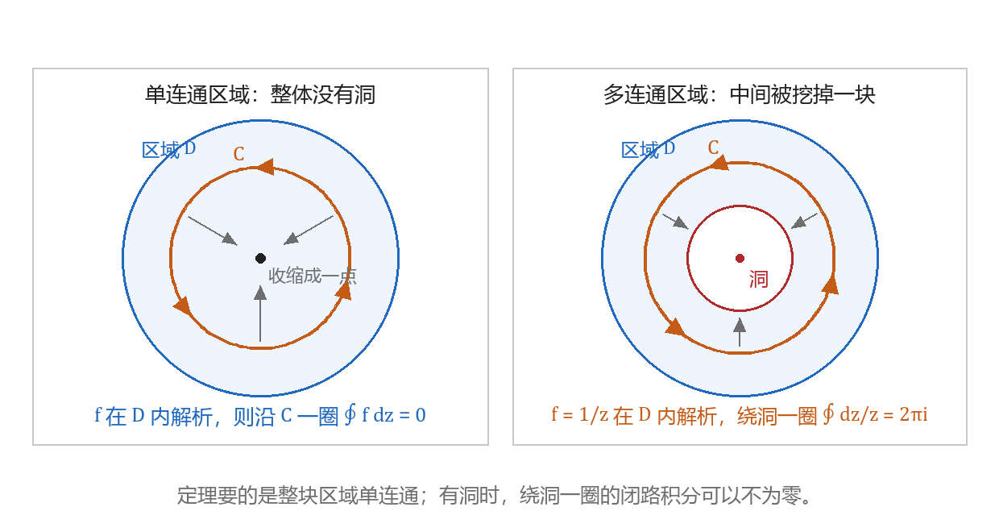
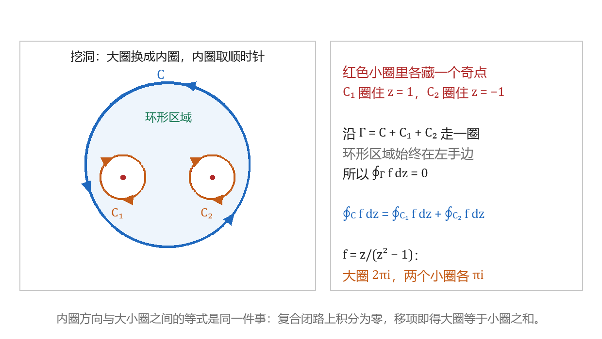
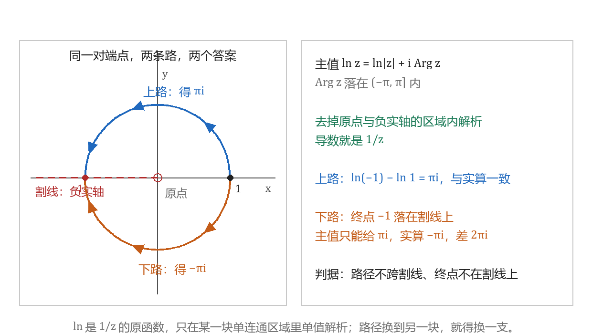

柯西积分定理及其推广
本节目标：能判断积分是否为零，并用复合闭路处理有奇点的题。
卷面怎么考
本课在公开试卷上有三处位置，三处都落在同一步：动笔之前先判断。
- 填空，3～4 分：给一条正向圆周，填 \oint_C 的值，被积函数是多项式与 \frac1z 的组合。西建大那份卷的填空第 3 题问「\operatorname{Ln}z 在什么区域内连续」，参考答案是「不取原点和负实轴的区域」，问的就是定理能成立的那块区域长什么样。
- 选择，3～4 分：单连通与多连通的分界。2025 年卷的选择题给「f(z) 是区域 D 内的解析函数」，四个选项里有一条是「f(z) 在区域 D 内闭路上的积分总是零」——区域带洞时这条不成立。B 集 3.2 的两道选择也在这里：一道问 \oint_C\frac{f(z)}{z-z_0}dz=0 在什么条件下成立，答案是 z_0 在 C 外；另一道问「f 在单连通域内解析」是「沿该域内任一闭曲线积分为零」的什么条件，答案是充要条件。
- 解答题，6～7 分：本章大题以闭路积分为主，上一课已经练过圈内有奇点时套公式的那一类。本课管的是它前面的一步：能不能直接写 0、该不该挖洞、走哪条路。
唤醒：区域有没有洞
高等数学里判断曲线积分与路径无关，除开 \frac{\partial P}{\partial y}=\frac{\partial Q}{\partial x}，还要区域单连通。复积分这里是同一件事：区域里带洞，绕洞走一圈的积分可以不为零。
单连通区域指内部没有洞的区域：区域内任何一条闭曲线都能在区域里连续收缩成一点，收缩过程中不离开区域。带洞的区域叫多连通区域，有的教材写「复连通区域」。圆盘、半平面、整个复平面都是单连通的；圆环域 1<|z|<2 与去掉原点的平面是多连通的。
柯西积分定理
设 f(z) 在单连通区域 D 内解析，C 是 D 内任一简单闭曲线，则
这条结论称为柯西积分定理。卷面上要用它，动笔前核对两件事：
- C 连同它的内部整块落在 D 里，且 D 单连通；
- f 在 D 内处处解析。
第二条常被写成「f 在 C 上解析」，那不够：定理管的是 C 围起来的那块区域。定理本身的证明本课程不作要求，下面只用它算题。
例：C 为正向圆周 |z-1|=1，求 \oint_C z\,dz。z 在整个复平面上解析，复平面单连通，闭路积分直接写 0。
反例：C 为正向圆周 |z|=1，求 \oint_C\frac{dz}{z}。被积函数在 C 上处处解析；C 的内部却夹着奇点 0，含 C 又避开 0 的区域只剩去掉原点的平面，那是多连通区域。第 8 课用参数化算过这个值是 2\pi i，不为零。同一个被积函数，换一条把原点圈在外面的闭曲线（例如 |z-2|=1），积分就变成 0。

assets/img/gen/柯西定理-单连通与多连通-对照-本机-01.py），许可：本项目自产）定理给出的是积分值 0。写理由时写「f 在 D 内解析」，不要写成 f(z)=0；卷面上这两个说法差着条件，阅卷按理由给分。
不解析时定理失效
被积函数含 \bar z、\operatorname{Re}z、\operatorname{Im}z、|z| 时在圈内处处不解析，上面第二条核对通不过，闭路积分不能写 0。
例：C 为 |z|=1 正向，求 \oint_C\bar z\,dz。参数化得
被积函数不解析，结果不为零，与定理不冲突：定理只对解析函数下结论。
判据落到动作上：动笔前先看被积函数是不是 z 的解析表达式——多项式、e^z、\sin z、\cos z、\frac{1}{z-z_0} 这一类都算。出现 \bar z、x、y、|z|，改走参数化。
挖洞：复合闭路
奇点落在圈里时，定理不适用，可围道又不方便参数化。复合闭路定理把这种情况搬回定理能用的范围。
设 C 与 C_1,\dots,C_n 都是简单闭曲线，每个 C_k 全在 C 内部且彼此不相交，D 是 C 的内部挖掉各 C_k 内部后剩下的区域。若 f 在 D 内解析，则
其中各曲线都取正向（逆时针）。
方向的由来与上一课定义正向时一致。沿 C 逆时针走、沿每个 C_k 顺时针走，拼成的闭路每走一段都把 D 留在左手边；这条合成的闭路记作
称为复合闭路（C_k^{-} 表示把 C_k 走反向）。f 在 \Gamma 围出的 D 内解析，于是 \oint_\Gamma f\,dz=0，把内圈那几项移到右边就是定理的等式。内圈取顺时针这条规则由此而来。
例：C 为正向圆周 |z|=2，求 \oint_C\frac{z}{z^2-1}dz。被积函数的奇点是 z=1 与 z=-1，两个都在圈内。取 C_1 为 |z-1|=\frac12、C_2 为 |z+1|=\frac12，都取正向，按定理
小圈上只剩一个一阶奇点。把被积函数写成 \frac{z/(z+1)}{z-1}，按上一课的公式得 \oint_{C_1}\frac{z}{z^2-1}dz=2\pi i\cdot\frac{z}{z+1}\Big|_{z=1}=\pi i；同法 \oint_{C_2}\frac{z}{z^2-1}dz=\pi i。两式相加：

assets/img/gen/柯西定理-复合闭路-挖洞方向-本机-02.py），许可：本项目自产）挖洞时两处容易写错：
- 内圈在复合闭路里漏了反向。沿 \Gamma 走时内圈要顺时针，写成逆时针等于把右边那一项的符号弄反，答案差一个负号。
- 内圈没圈全。圈内有两个奇点就挖两个洞，漏一个等于把那一项的贡献丢掉。
原函数与不定积分
柯西积分定理的直接推论：设 f 在单连通区域 D 内解析，则 f 在 D 内有原函数 F（F'(z)=f(z)），且沿 D 内任一从 z_0 到 z_1 的路径 C
右端只看端点，积分与路径无关。原函数彼此差一个常数，把这一族函数记作 f 的不定积分
卷面上出现「求不定积分」就写出 F(z)+C；出现「沿 C 从 z_0 到 z_1」就用端点值相减。
例：C 为从 0 到 1+i 的任意一条路径，求 \int_C ze^z\,dz。ze^z 在整个复平面上解析，分部积分得
代入端点：
折线也好，圆弧也好，路径的形状没有参与计算，只要整条路径落在解析的单连通区域里。含 \bar z 的被积函数没有原函数，第 8 课已经验过这一条：换一条路，答案就变。
Ln z 要先定分支
\frac1z 的原函数是 \operatorname{Ln}z，而 \operatorname{Ln}z=\ln|z|+i\arg z 的辐角部分有无穷多个取值，彼此差 2k\pi。要把它写成能求导的原函数，先把它固定成一支：把 \arg z 限制在某个长度 2\pi 的开区间内。
主值取 \ln z=\ln|z|+i\operatorname{Arg}z，其中 \operatorname{Arg}z\in(-\pi,\pi]。它在去掉原点与负实轴的区域内解析，导数是 \frac1z；负实轴是这一支的割线。西建大那份卷填空问的「\operatorname{Ln}z 的连续区域」，答案就是这块区域。
例：C 为从 1 到 -1 的单位圆上半弧，求 \int_C\frac{dz}{z}。路径上 \arg z 从 0 连续增到 \pi，与主值相符，代端点：
同一对端点改走下半圆弧，\arg z 从 0 连续减到 -\pi，参数化得 i\int_0^{-\pi}d\theta=-\pi i。这一支在 -1 处给的是 -\pi；主值在 -1 处定义为 \pi，照主值代端点仍得 \pi i，与实际相差 2\pi i。
判据：路径不跨过割线、终点也不落在割线上，才能直接代端点；否则先把分支换成与路径相符的那一支，或者回到参数化。

assets/img/gen/柯西定理-Ln分支-主值割线-本机-03.py），许可：本项目自产）三条路怎么选
本章的闭路积分只有几条路，判断依据是圈内有没有奇点、以及围道是不是圆。
| 题面的样子 | 走哪条 | 卷面上的动作 |
|---|---|---|
| 曲线给了参数式；被积函数含 \bar z、\operatorname{Re}z、\operatorname{Im}z、\vert z\vert | 参数化 | z=z(t)，dz=z'(t)dt，折线分段相加 |
| 闭路，圈内圈上 f 处处解析 | 柯西积分定理 | 写 0，附一句「在单连通区域内解析」 |
| 闭路，圈内有奇点，被积函数能凑成 \frac{g(z)}{(z-z_0)^n} | 柯西积分公式或高阶导数公式（上一课） | 判 z_0 在圈内，代公式 |
| 闭路，圈内有几个奇点，或围道不是圆 | 复合闭路 | 先挖洞换成小圈，再按上一行算 |
| 开路径，f 在单连通区域内解析 | 原函数 | F(z_1)-F(z_0) |
| 路径跨过割线，或端点落在割线上 | 换分支 | 换到与路径相符的那一支，或参数化 |
同一个被积函数，圈内情况一变就换路。取 f(z)=\frac{e^z}{z^2+1}，奇点是 z=i 与 z=-i：
- 围道 |z|=\frac12：两个奇点都在圈外，f 在 |z|\le\frac12 上解析，复平面单连通，积分写 0。
- 围道 |z|=2：两个奇点都在圈内，挖两个洞换成小圈，各按上一课的公式算得 \pi e^{i} 与 -\pi e^{-i}，相加得 2\pi i\sin 1。
解答题里常见这种结构：先判被积函数在圈内是否解析，解析就写 0；有奇点先挖洞，把围道换成小圈；小圈上的积分再按公式算。三步各占一行，卷面按步给分。
练习：填完选型卡
三问写在工作本上，每题只留算式加一句理由。
- 判零：\oint_{|z-1|=1}z\,dz 与 \oint_{|z|=1}\frac{dz}{z} 各写一行，并说明前者为什么能直接写 0、后者为什么不能。
- 挖洞：\oint_{|z|=2}\frac{z}{z^2-1}dz。画出大圈与两个小圈、标出方向，写三行等式，答案 2\pi i。
- 换围道：把第 2 题的围道换成 |z-\frac12|=\frac12，圈内只剩奇点 1，答案 \pi i。
最后把「三条路怎么选」那张表抄进纸笔题型整理册的选型卡，表里每一行配一道自己的例题或错题。
本课的小 lab 收在科目目录的 lab/ 下、目录名以 0010 开头：任务书与断言都在那里，lab/README.md 写着任务表与卡壳时的提示顺序。
带走的公式卡
| 要写的东西 | 写法 |
|---|---|
| 定理的结论 | \oint_C f\,dz=0，f 在单连通区域 D 内解析 |
| 复合闭路 | \oint_C f\,dz=\sum_k\oint_{C_k}f\,dz，内圈取顺时针 |
| 原函数代端点 | \int_C f\,dz=F(z_1)-F(z_0)，f 在单连通区域内解析 |
| 不定积分 | \int f(z)\,dz=F(z)+C |
| \frac1z 的原函数 | \ln z 的某一支，取哪一支看路径落在哪块区域 |
- 李君、于非非《复变函数与积分变换》§2.3 柯西积分定理及其推广
- 复变积分解题集 B 集习题（西安建筑科技大学，按节分组）
- 合肥工业大学期末试卷（含答案与逐题分值）